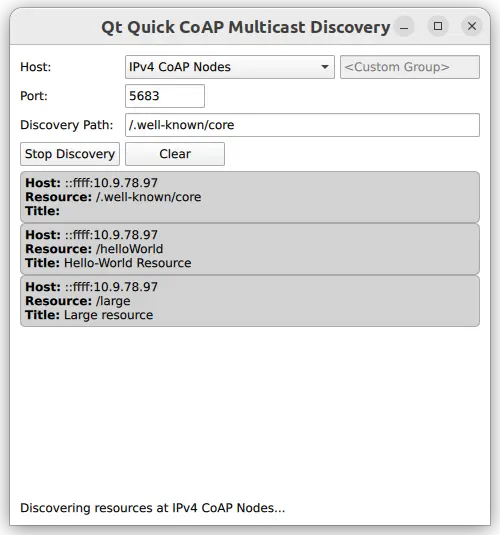

Quick CoAP Multicast Discovery
Using the CoAP client for a multicast resource discovery with a Qt Quick user interface.

The Quick CoAP Multicast Discovery example demonstrates how to register QCoapClient as a QML type and use it in a Qt Quick application for CoAP multicast resource discovery.
Note: Qt CoAP does not provide a QML API in its current version. However, you can make the C++ classes of the module available to QML as shown in this example.
Running the Example
To run the example from Qt Creator, open the Welcome mode and select the example from Examples. For more information, visit Building and Running an Example.
Setting Up a CoAP Server
To run the example application, you first need to set up and start at least one CoAP server supporting multicast resource discovery. You have the following options:
- Manually build and run CoAP servers using libcoap, Californium, or any other CoAP server implementation, which supports multicast and resource discovery features.
- Use the ready Docker image available at Docker Hub, which builds and starts CoAP server based on Californium's multicast server example.
Using the Docker-based Test Server
The following command pulls the docker container for the CoAP server from the Docker Hub and starts it:
docker run --name coap-multicast-server -d --rm --net=host tqtc/coap-multicast-test-server:californium-2.0.0
Note: You can run more than one multicast CoAP servers (on the same host or other hosts in the network) by passing a different --name to the command above.
To terminate the docker container after usage, first obtain the container's ID by executing the docker ps command. The output will look like this:
$ docker ps CONTAINER ID IMAGE 8b991fae7789 tqtc/coap-multicast-test-server:californium-2.0.0
After that, use this ID to stop the container:
docker stop <container_id>
Exposign C++ Classes to QML
In this example, you need to expose the QCoapResource and QCoapClient classes, as well as the QtCoap namespace, to QML. To achieve this, create custom wrapper classes and use the special registration macros.
Create the QmlCoapResource class as a wrapper around QCoapResource. Use the Q_PROPERTY macro to make several properties accessible from QML. The class does not need to be directly instantiable from QML, so use the QML_ANONYMOUS macro to register it.
class QmlCoapResource : public QCoapResource { Q_GADGET Q_PROPERTY(QString title READ title) Q_PROPERTY(QString host READ hostStr) Q_PROPERTY(QString path READ path) QML_ANONYMOUS public: QmlCoapResource() : QCoapResource() {} QmlCoapResource(const QCoapResource &resource) : QCoapResource(resource) {} QString hostStr() const { return host().toString(); } };
After that, create the QmlCoapMulticastClient class with the QCoapClient class as a base class. Use the Q_PROPERTY macro to expose a custom property, and also create several Q_INVOKABLE methods. Both the property and the invokable methods can be accessed from QML. Unlike QmlCoapResource, you want to be able to create this class from QML, so use the QML_NAMED_ELEMENT macro to register the class in QML.
class QmlCoapMulticastClient : public QCoapClient { Q_OBJECT Q_PROPERTY(bool isDiscovering READ isDiscovering NOTIFY isDiscoveringChanged) QML_NAMED_ELEMENT(CoapMulticastClient) public: QmlCoapMulticastClient(QObject *parent = nullptr); Q_INVOKABLE void discover(const QString &host, int port, const QString &discoveryPath); Q_INVOKABLE void discover(QtCoap::MulticastGroup group, int port, const QString &discoveryPath); Q_INVOKABLE void stopDiscovery(); bool isDiscovering() const; Q_SIGNALS: void discovered(const QmlCoapResource &resource); void finished(int error); // The bool parameter is not provided, because the signal is only used by // the QML property system, and it does not use the passed value anyway. void isDiscoveringChanged(); public slots: void onDiscovered(QCoapResourceDiscoveryReply *reply, const QList<QCoapResource> &resources); private: QCoapResourceDiscoveryReply *m_reply = nullptr; };
Finally, register the QtCoap namespace, so that you can use the enums provided there:
namespace QCoapForeignNamespace { Q_NAMESPACE QML_FOREIGN_NAMESPACE(QtCoap) QML_NAMED_ELEMENT(QtCoap) }
Adjusting Build Files
To make the custom types available from QML, update the build system files accordingly.
CMake Build
For a CMake-based build, add the following to the CMakeLists.txt:
qt_add_qml_module(quickmulticastclient
URI CoapClientModule
VERSION 1.0
SOURCES
qmlcoapmulticastclient.cpp qmlcoapmulticastclient.h
QML_FILES
Main.qml
)
qmake Build
For a qmake build, modify the quickmulticastclient.pro file in the following way:
CONFIG += qmltypes
QML_IMPORT_NAME = CoapClientModule
QML_IMPORT_MAJOR_VERSION = 1
...
qml_resources.files = \
qmldir \
Main.qml
qml_resources.prefix = /qt/qml/CoapClientModule
RESOURCES += qml_resources
Using New QML Types
Now, when the C++ classes are properly exposed to QML, you can use the new types:
CoapMulticastClient { id: client onDiscovered: (resource) => { root.addResource(resource) } onFinished: (error) => { statusLabel.text = (error === QtCoap.Error.Ok) ? qsTr("Finished resource discovery.") : qsTr("Resource discovery failed with error code: %1").arg(error) } }
The QmlCoapMulticastClient::finished() signal triggers the onFinished signal handler, to show the request's status in the UI. Note that the example does not use QCoapClient's signals directly, because both error() and finished() signals take a QCoapReply as a parameter (which is not exposed to QML), and the example only requires the error code.
The QmlCoapMulticastClient's constructor forwards the QCoapClient's signals to QmlCoapMulticastClient::finished() signal:
QmlCoapMulticastClient::QmlCoapMulticastClient(QObject *parent) : QCoapClient(QtCoap::SecurityMode::NoSecurity, parent) { connect(this, &QCoapClient::finished, this, [this](QCoapReply *reply) { if (reply) { emit finished(static_cast<int>(reply->errorReceived())); reply->deleteLater(); if (m_reply == reply) { m_reply = nullptr; emit isDiscoveringChanged(); } } else { qCWarning(lcCoapClient, "Something went wrong, received a null reply"); } }); connect(this, &QCoapClient::error, this, [this](QCoapReply *, QtCoap::Error err) { emit finished(static_cast<int>(err)); }); }
When the Discover button is pressed, one of the overloaded discover() methods is invoked, based on the selected multicast group:
Button { id: discoverButton text: client.isDiscovering ? qsTr("Stop Discovery") : qsTr("Discover") Layout.preferredWidth: 100 onClicked: { if (client.isDiscovering) { client.stopDiscovery() } else { var currentGroup = groupComboBox.model.get(groupComboBox.currentIndex).value; var path = ""; if (currentGroup !== - 1) { client.discover(currentGroup, parseInt(portField.text), discoveryPathField.text); path = groupComboBox.currentText; } else { client.discover(customGroupField.text, parseInt(portField.text), discoveryPathField.text); path = customGroupField.text + discoveryPathField.text; } statusLabel.text = qsTr("Discovering resources at %1...").arg(path); } } }
This overload is called when a custom multicast group or a host address is selected:
void QmlCoapMulticastClient::discover(const QString &host, int port, const QString &discoveryPath) { QUrl url; url.setHost(host); url.setPort(port); m_reply = QCoapClient::discover(url, discoveryPath); if (m_reply) { connect(m_reply, &QCoapResourceDiscoveryReply::discovered, this, &QmlCoapMulticastClient::onDiscovered); emit isDiscoveringChanged(); } else { qCWarning(lcCoapClient, "Discovery request failed."); } }
And this overload is called when one of the suggested multicast groups is selected in the UI:
void QmlCoapMulticastClient::discover(QtCoap::MulticastGroup group, int port, const QString &discoveryPath) { m_reply = QCoapClient::discover(group, port, discoveryPath); if (m_reply) { connect(m_reply, &QCoapResourceDiscoveryReply::discovered, this, &QmlCoapMulticastClient::onDiscovered); emit isDiscoveringChanged(); } else { qCWarning(lcCoapClient, "Discovery request failed."); } }
The QCoapResourceDiscoveryReply::discovered() signal delivers a list of QCoapResources, which is not a QML type. To make the resources available in QML, forward each resource in the list to the QmlCoapMulticastClient::discovered() signal, which takes a QmlCoapResource instead:
void QmlCoapMulticastClient::onDiscovered(QCoapResourceDiscoveryReply *reply, const QList<QCoapResource> &resources) { Q_UNUSED(reply) for (const auto &resource : resources) emit discovered(resource); }
The discovered resources are added to the resourceModel of the list view in the UI:
function addResource(resource) { resourceModel.insert(0, {"host" : resource.host, "path" : resource.path, "title" : resource.title}) }
While the discovery is in progress, press the Stop Discovery button to stop the discovery. Internally it is done by aborting the current request:
void QmlCoapMulticastClient::stopDiscovery() { if (m_reply) m_reply->abortRequest(); }
Files: